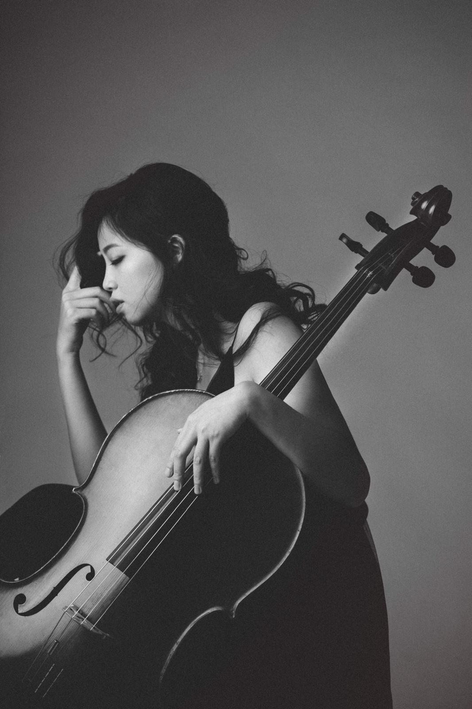

邱聖之
Cello
Cello
邱聖之
大提琴 Cello · @shengzhi0421
Music Content Brand Proposal
琵琶 × 大提琴的雙人音樂企劃
把流行歌、生活日常和各種奇怪又好聽的靈感，
玩成新的音樂東。西。


01 / Concept
「東。西」是一個由琵琶演奏者 Joy 與大提琴演奏者邱聖之組成的雙人音樂企劃。
我們希望透過國樂與西樂的組合，把大家熟悉的流行歌曲、生活聲音、日常情境與舞台演出，重新改編成有趣、好聽、有記憶點的短影音內容。
這個企劃不一開始走嚴肅的古典或傳統音樂路線，而是先用幽默、生活感和流行音樂切入，讓更多人願意靠近琵琶與大提琴。
02 / Duo Setting
琵琶｜音樂創作者｜表演藝術家
一句話定位：以靈動俐落的琵琶聲響與跨界創作能量，為「東。西」帶來東方線條、節奏顆粒、舞台感與幽默反差。
劉佳瑩 Joy 為琵琶演奏者、音樂創作者與表演藝術家，亦為普琈門樂團團長。她長期活躍於跨界音樂與表演藝術場域，演出形式橫跨音樂、劇場、舞蹈劇場、火舞劇場與當代表演。
在「東。西」中的角色：Joy 負責琵琶聲部、東方聲響設計、節奏顆粒、旋律裝飾與跨界舞台語彙，讓流行 Cover、生活聲音改編與小劇場內容具備靈動、機靈且帶反差感的辨識度。
大提琴｜音樂教育者｜跨界演出者
一句話定位：以溫柔厚實的大提琴聲線，為「東。西」建立情緒、低頻、和聲與畫面感。
邱聖之畢業於實踐大學音樂系碩士，積極參與多元型態的音樂演出與跨界合作，同時致力於大提琴教學與弦樂教育。
現任東湖國小弦樂團指揮暨大提琴教師、秀朗國小弦樂團大提琴教師，長期投入兒童與青少年弦樂教育，具備豐富的教學、排練與舞台實務經驗。
在「東。西」中的角色：邱聖之負責大提琴聲部、低頻設計、和聲鋪陳、音樂情緒與西方弦樂語彙。她的大提琴聲音能替琵琶的顆粒感建立穩定基底，讓幽默、生活化的內容仍保有音樂厚度與畫面感。
03 / Brand Voice
可以玩諧音梗、生活梗、反差感。
雖然輕鬆，但音樂品質不能隨便。
不只演奏，也讓觀眾看到兩人的互動。
畫面與音樂仍保留專業感。
未來可發展成演出、品牌合作、音樂會。
04 / Fixed Line
這句可以固定放在每支影片結尾，作為觀眾留言互動的引導。
| 使用情境 | 文案 |
|---|---|
| 片頭 | 今天來玩一個東。西 |
| 片尾 | 下次要玩什麼東。西？ |
| 留言引導 | 留言告訴我們，下一首要改什麼東。西 |
| 搞笑版 | 搞什麼東西？搞音樂的東。西 |
| 自介版 | 我們是東。西，專門把音樂玩成各種東西 |
05 / Why Now
琵琶偏顆粒、節奏、東方線條；大提琴偏低頻、情緒、空間感。兩者放在一起，很容易做出「熟悉又陌生」的音樂效果。
先從流行歌、爆款旋律、生活聲音改編開始。觀眾聽得懂旋律，就更容易停下來看。
流行歌東。西版、生活聲音東。西版、小劇場、觀眾點歌、節日主題、婚禮進場版都能延伸。
帳號經營起來後，可延伸到婚禮演出、品牌活動、企業晚宴、音樂會、跨界合作與線上內容合作。
06 / Content Pillars
把近期爆紅或大家熟悉的歌曲，改成琵琶＋大提琴版本。
目的：用熟悉旋律吸引觀眾停下來，再用改編建立記憶點。
把生活裡常聽到的聲音、情境、情緒改成音樂。
目的：增加幽默感與生活感，讓觀眾更容易留言互動。
用短對話開場，再接一段演奏。
目的：讓觀眾不只記得樂器，也記得兩個人的個性和互動。
記錄兩人排練、演出、準備、後台、NG、改編過程。
目的：建立真實感與專業感，也方便未來接演出邀約。
07 / First 3 Months
08 / Phase One
第一階段不以接案或營利為主要目標，而是先讓帳號被記住。
讓觀眾知道有一組「琵琶＋大提琴」的雙人音樂組合，叫做東。西。
固定做流行歌改編、生活梗音樂化、兩人互動小劇場與表演紀錄。
希望留言開始出現：下一首可以改這首嗎？可以玩某某東西嗎？想看現場，可以婚禮演出嗎？
09 / Reels Ideas
| 集數 | 類型 | 主題 | Hook |
|---|---|---|---|
| EP1 | 介紹 | 我們是什麼東。西 | 一把琵琶＋一把大提琴，這是什麼東。西？ |
| EP2 | Cover | 爆款歌東。西版 | 這首最近一直聽到，我們把它改成琵琶＋大提琴版 |
| EP3 | Cover | 甜歌變古裝劇 | 原本很甜，結果一加琵琶跟大提琴，好像有人要進宮 |
| EP4 | 生活 | iPhone 鬧鐘 | 讓人最想關掉的聲音，我們把它變好聽 |
| EP5 | 生活 | Line 訊息聲 | 如果曖昧對象傳訊息，有自己的配樂 |
| EP6 | 生活 | 垃圾車音樂 | 台灣人 DNA 裡的旋律，被我們改成史詩版 |
| EP7 | Cover | 失戀歌變武俠片 | 這首歌本來很痛，我們讓它更像江湖恩怨 |
| EP8 | 紀錄 | 第一次合奏 | 琵琶跟大提琴第一次合體，會變成什麼東西？ |
| EP9 | 小劇場 | 今天要玩什麼 | 搞什麼東西？搞音樂的東。西 |
| EP10 | 商演感 | 婚禮進場東。西版 | 如果婚禮進場不是鋼琴，而是琵琶＋大提琴？ |
| EP11 | 表演 | 演出前紀錄 | 大提琴跟琵琶出門表演，最麻煩的不是音樂 |
| EP12 | 互動 | 觀眾留言點歌 | 你們留言的東。西，我們真的做了 |
10 / Video System
0–2 秒｜Hook：如果這首歌變成東。西版？
2–5 秒｜先彈出大家聽得懂的原曲旋律
5–20 秒｜琵琶＋大提琴改編主段
20–25 秒｜兩人互動或表情反應
25–30 秒｜下次要玩什麼東。西？
0–3 秒｜這個生活聲音，可以變成音樂嗎？
3–6 秒｜播出原聲或演出生活情境
6–8 秒｜兩人互看：「可以吧？」
8–25 秒｜東。西版改編
25–30 秒｜留言告訴我們，下一次玩什麼東。西？
0–8 秒｜兩人簡短對話拋梗
8–10 秒｜表情停頓或反差
10–28 秒｜開始演奏
28–32 秒｜固定 Slogan
11 / Instagram Setup
東。西｜琵琶 × 大提琴
琵琶｜Joy @joyliu916
大提琴｜邱聖之 @shengzhi0421
流行 Cover｜生活改編｜現場演出
下次要玩什麼東。西？
建議優先使用：dongxi.music
如果已被使用，第二選擇：dongxi.duo
12 / Visual Direction
不要太傳統，也不要太嚴肅。視覺應該是有質感，但看起來親近；有音樂性，但不難懂。
| 項目 | 建議 |
|---|---|
| 色系 | 米白、黑、深咖、木質色 |
| 字體 | 乾淨黑體＋一點明體感 |
| 畫面 | 樂器特寫、兩人互動、生活物件 |
| 字幕 | 大、短、幽默、好懂 |
| 穿搭 | 一位偏東方元素，一位偏西方簡約，但不要太刻意 cosplay |
| 場景 | 排練室、生活空間、舞台、咖啡廳、乾淨棚拍 |
13 / Month One
14 / Workflow
| 角色 | 工作 |
|---|---|
| Joy | 琵琶演奏、曲目討論、東方聲響設計 |
| 邱聖之 | 大提琴演奏、和聲／低頻設計、音樂情緒處理 |
| 翟平 | 企劃、拍攝、剪輯、帳號經營、文案、發佈排程 |
| 共同討論 | 曲目選擇、影片風格、演出方向 |
15 / Watch-outs
前期先測試，不要一開始就設定成正式出道或大型品牌發表。建議先用「三個月短影音實驗計畫」。
初期 Reels 可先以平台音源、短片段改編、非營利曝光為主；未來商演、上架或合作要確認授權。
需要固定加入兩人對話、生活梗、幕後紀錄與觀眾點題，建立人格與記憶點。
前期建立固定模板：Cover、生活聲音、小劇場、表演紀錄，不要每支影片都重新發明一次。
16 / Roadmap
目標：建立辨識度與互動。
例如爆款歌東。西版、垃圾車史詩版、婚禮進場東。西版、觀眾點歌東。西版。
婚禮演出、品牌活動、音樂會開場、飯店／商場活動、藝文活動與節慶活動。
規劃《東。西：很多東西音樂會》，把生活、城市、愛情、節日、回憶整理成有敘事感的音樂會。
17 / First Video
影片標題：一把琵琶＋一把大提琴，這是什麼東。西？｜長度：30 秒
| 秒數 | 畫面 | 字幕／內容 |
|---|---|---|
| 0–2 | 兩人拿樂器坐定位 | 一把琵琶＋一把大提琴 |
| 2–4 | Joy 看鏡頭 | 這是什麼東。西？ |
| 4–7 | 邱聖之拉一小段低音 | 西邊先來一點 |
| 7–10 | Joy 彈一小段琵琶 | 東邊也來一點 |
| 10–24 | 兩人合奏一段流行旋律改編 | 結果變成這樣 |
| 24–27 | 兩人互看／笑一下 | 好像真的有點東西 |
| 27–30 | Logo 字卡 | 下次要玩什麼東。西？ |
一把琵琶，一把大提琴，
我們決定把流行歌、生活日常、各種奇怪又好聽的東西，通通玩成音樂。
我們是「東。西」。
琵琶｜Joy @joyliu916
大提琴｜邱聖之 @shengzhi0421
下次要玩什麼東。西？
留言點題。
18 / Closing
「東。西」不是一個只做中西合璧的演奏組合，而是一個可以被長期經營的音樂內容品牌。
前期先用 Reels 測試市場，用流行 Cover 和生活幽默讓觀眾停下來，再透過兩位演奏者的專業與互動，慢慢建立辨識度。
第一階段目標很簡單：先讓帳號活起來，讓觀眾開始期待：下次她們要玩什麼東。西？